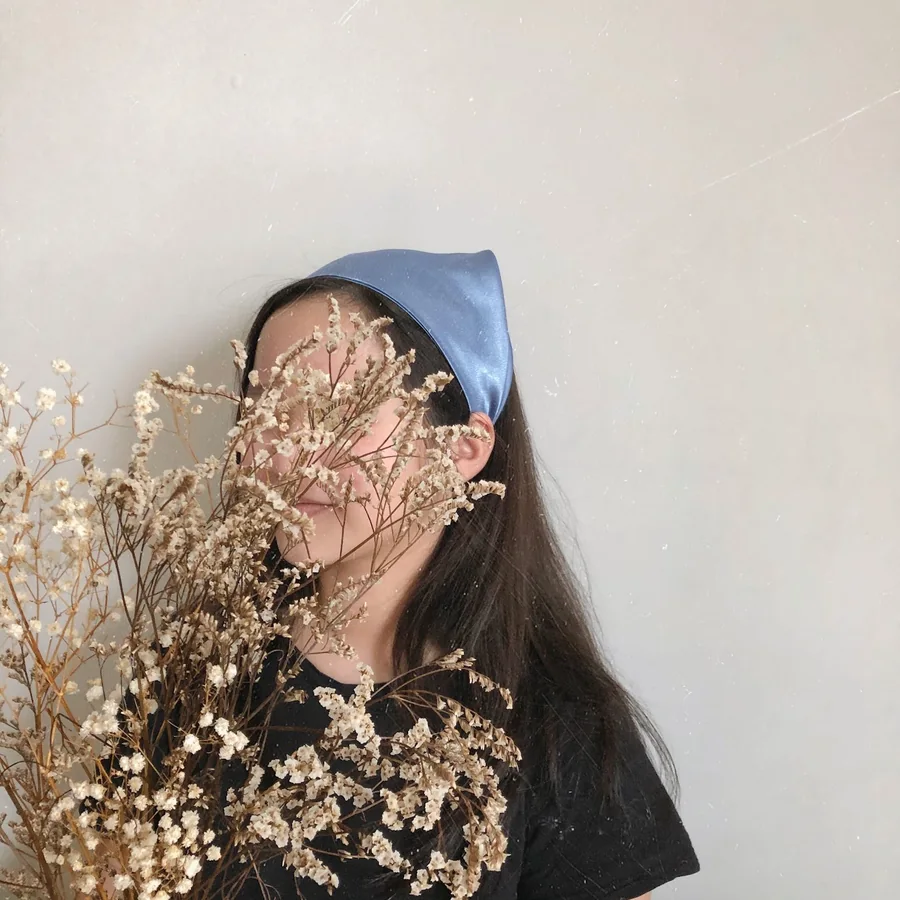
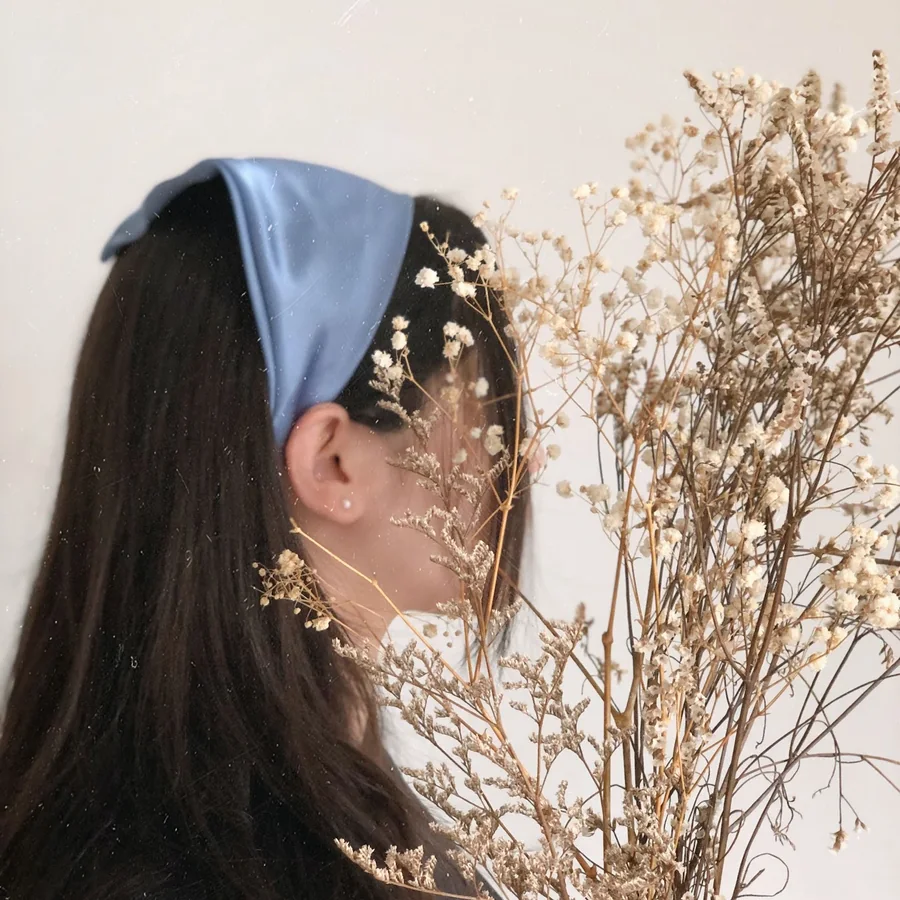
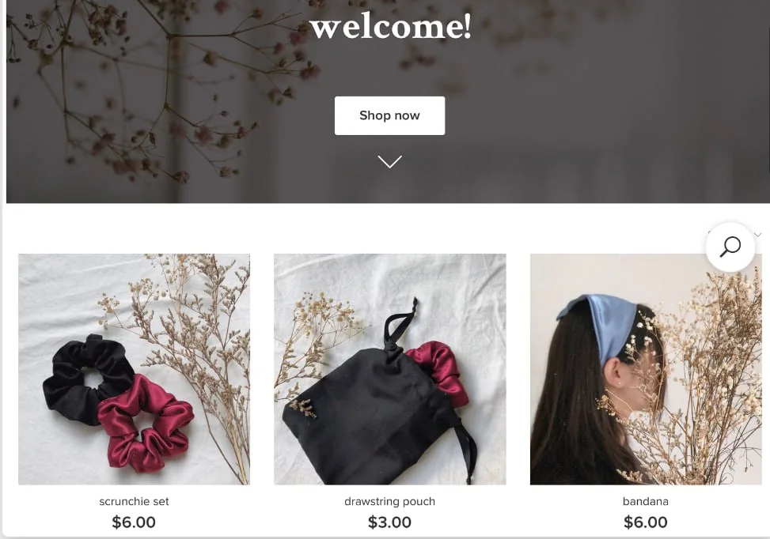
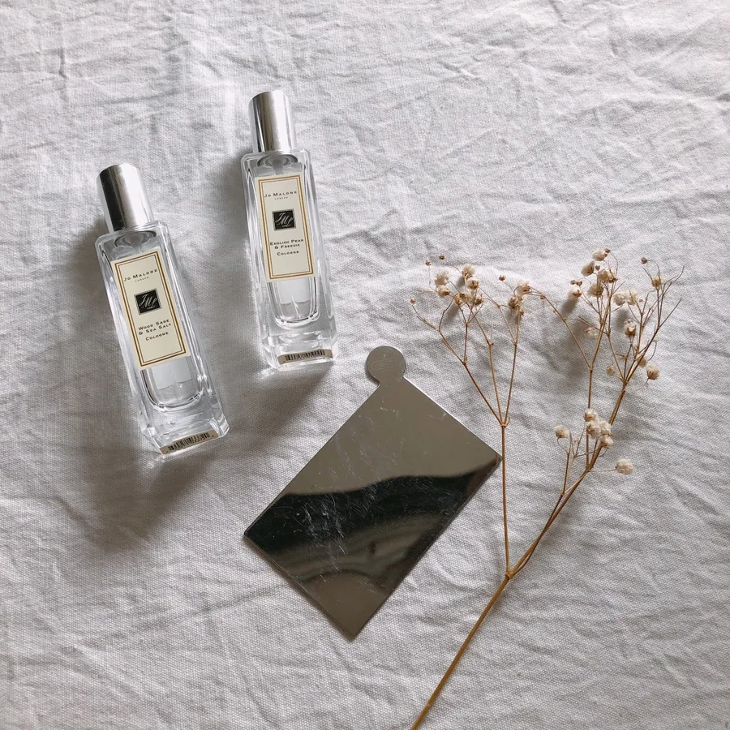
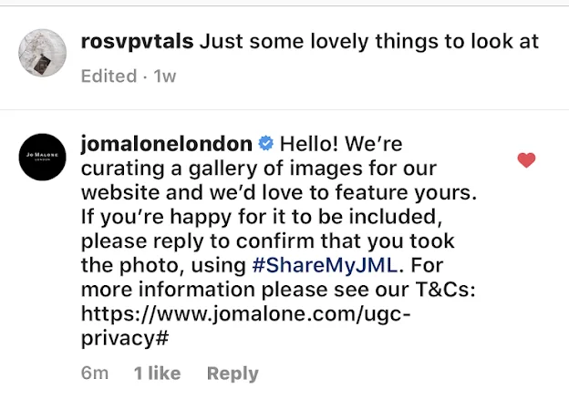

01 · The look
Soft, quiet and a little bit vintage.
With a tiny budget, the photos had to do the selling. I set a simple look and stuck to it: white linen, dried baby’s breath and limonium, natural light, and satin in muted jewel tones. Product names followed the same mood, like midnight, mauve, garnet, carnation and delphinium.
Satin scrunchies are everywhere, so the product alone wouldn’t stand out. What I could control was how it looked. Neutral linen and dried flowers made the satin colours pop, cost almost nothing, and gave every post the same mood, so someone scrolling would recognise a rosvpvtals photo before reading the name.



02 · The store
A shop people could browse on their own.
I set up a small online store so customers could see everything, with prices, in one place instead of asking in DMs. Instagram stories pointed back to it, including sale reminders like “Items are still on sale! Get yours today!” with the discounted prices shown.
Answering “how much?” in DMs one by one doesn’t scale, and every extra message is a chance for someone to drop off. A store meant Instagram could do the attracting and the store could do the selling, with one link connecting them.

04 · A nice surprise
Jo Malone London asked to use my photo.
Using the same styling, I posted a flatlay featuring two Jo Malone colognes. Their official account commented asking permission to feature it in a gallery on their website (#ShareMyJML). A global beauty brand picking a photo from a two-month-old student shop told me the visual style was working.


05 · Trade-offs
The calls I made, and what they cost.
Where should people buy?
A simple online store (chosen)
Every product and price in one place, linked from Instagram. Costs: setup time, and one more step than just messaging me.
Sell only through DMs (not chosen)
No setup, but every sale needs a back-and-forth, and people drop off while waiting for a reply.
What should the content focus on?
Styling and behind the scenes (chosen)
A consistent look builds recognition, and packing videos show the care behind a cheap product. Costs: more time per post.
Plain product photos (not chosen)
Faster to make, but they look like every other scrunchie listing.
How do I move slower stock?
A visible sale, announced in stories (chosen)
Struck-through prices make the deal obvious and give people a reason to buy now. Costs: lower margin on those items.
Leave prices as they are (not chosen)
Protects margin, but stock sits and the shop goes quiet.
06 · What I learned
The habits started here.
What worked
- A consistent visual style made a tiny shop look trustworthy, and it caught a big brand’s eye.
- Behind-the-scenes TikToks showed the craft, which justified the price.
What I’d do differently
- Track numbers from day one: views, store visits and which post drove each sale. In 2020 I only knew the total.
- Plan launches instead of posting as I went. I do this now with Kiko’s Café’s themed drops.
03 · Instagram & TikTok
Short, satisfying, behind the scenes.
I ran both accounts on my own. On TikTok I posted short packing videos: wrapping each scrunchie, tying on a little kraft “satin” tag, sealing the order. They showed the care that went into a $3.50 product, which is what made people want one. On Instagram I posted product shots and used stories for sales and restocks.
A finished scrunchie photo looks like any other. The making and packing is what made mine different, so I showed that. Short packing clips also suited TikTok: they’re satisfying to watch, quick to film, and I could post one for every order.